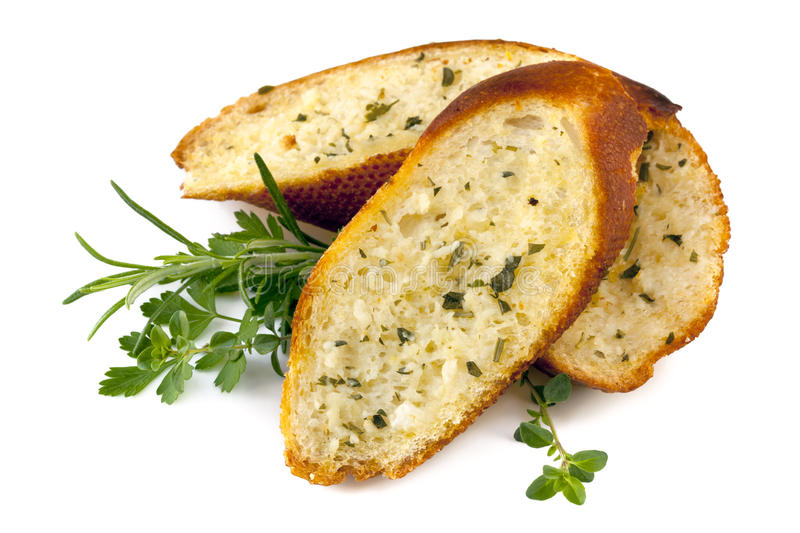

Classic Garlic Bread

Description
This garlic bread takes almost no time, and is sure to be
a hit with any bread lover!
Ingredients
- 1 stick of butter
- 2 cloves of garlic, grated on a microplane
- Kosher salt
- Freshly ground pepper
- 1 loaf of chewy white bread, with an open crumb
- 1 cup of chiffonade parsley and basil (optional)
Steps
- Begin by melting your butter in a small sauce pan on low heat. Once it has
melted, take a ladle and skim off the white foam on top. Then, add
the grated garlic to the butter and slowly simmer. Once the garlic
smells and tastes great, remove the butter from the heat but don't
allow it to cool so much it solidifies.
- Take your loaf of bread and cut it into slices at a steep angle.
Cutting the bread on a heavy bias like this will give us a better surface
area to crust ratio.
- Preheat oven to 400 degrees
- Using a basting brush, liberally coat the bread with the garlic butter. We want
the bread to be well saturated with the butter because that will give us the
classic garlic bread chew we all know and love. Then sprinkle your salt and
pepper on top of the bread.
- Place the bread in the oven and check every 5 minutes. Once the bread has
a golden brown color, remove from the oven and allow to cool for 5 minutes.
- Sprinkle your chiffonade parsley and basil on top of the bread to improve
the visuals of your dish and add a fresh pop (optional).